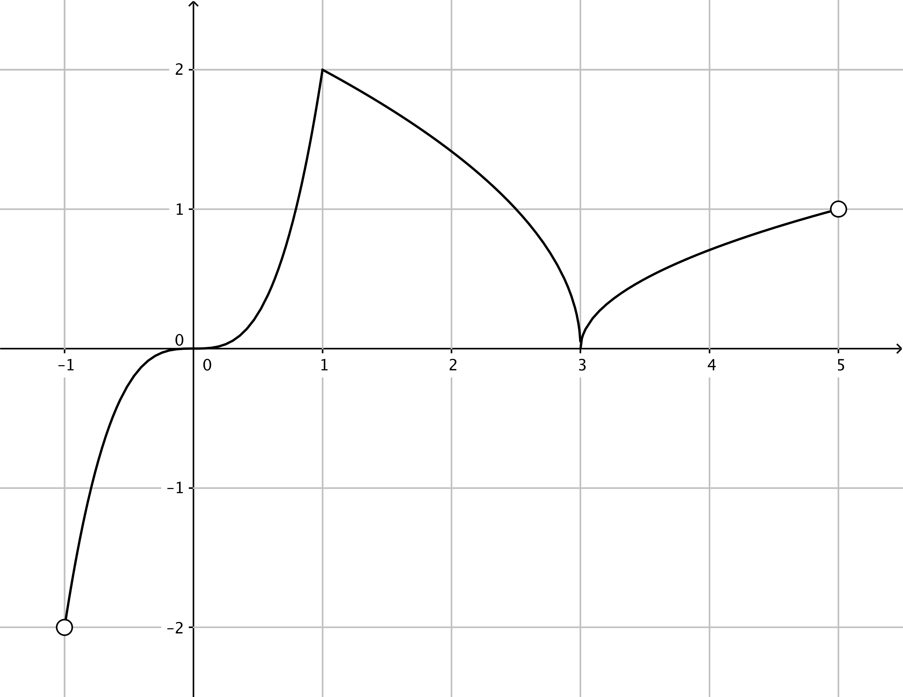
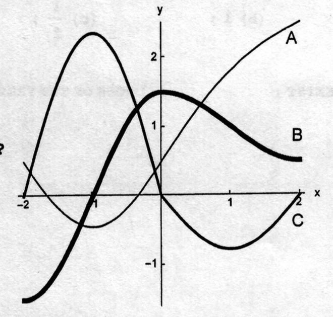

- (a)
- The (entire) graph of a function \(f\) is shown in the figure below.

Find the interval (or intervals) on which the derivative of \(f\) is increasing.
- (b)
- The figure below shows the graphs of \(f\), \(f'\), and \(f''\). Which curve is which?
